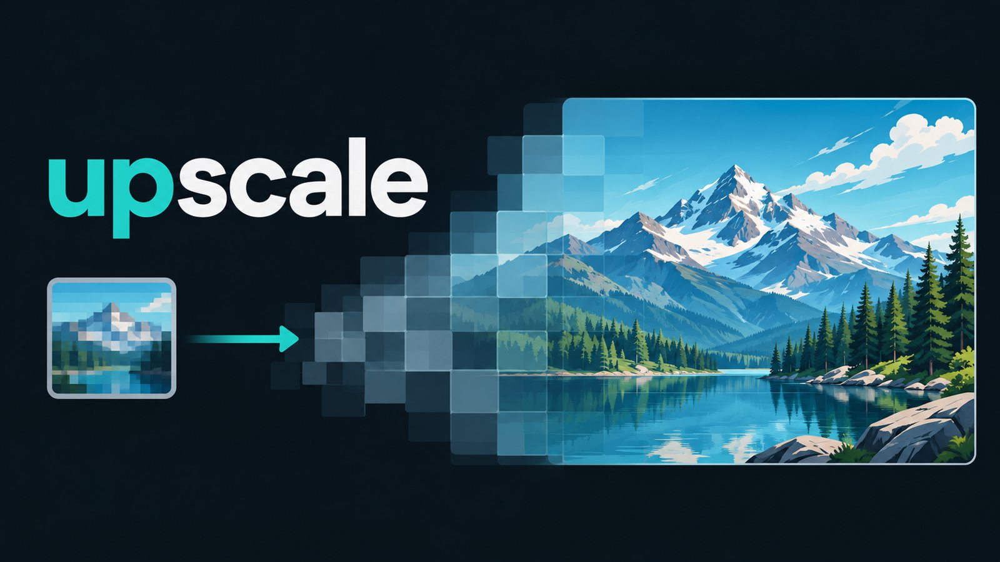

upscale
Upscale images to any target size on your own machine. Real-ESRGAN passes are chained to reach the scale you ask for, and overlapping tiles are feather-blended so large outputs have no seams.

- Exact scale (
--scale) or target long edge in pixels (--target-size) - CPU or NVIDIA GPU; tile size picked from free VRAM
- Swappable models: Real-ESRGAN family, HAT, SPAN and community weights
- CLI, local web UI and job API, MCP tools for agents
- No telemetry; models download once from their public hosts
pip install -e ".[server]" upscale upscale input.png output.png --scale 4 upscale serve